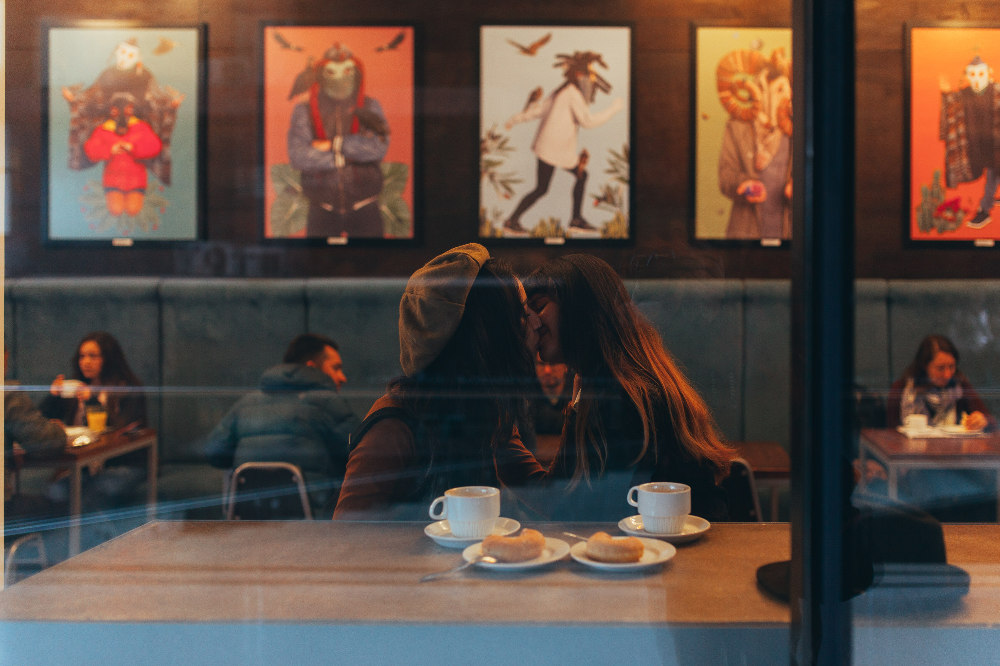
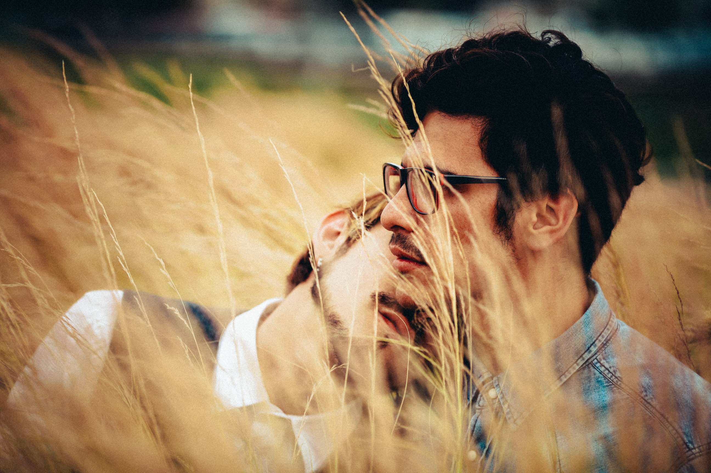

Proyecto: Su Historia
Mizzio y Agus

Año 2016, Agustín llevaba 1 mes de novio, pero para él sentía que todo había avanzado muy
rápido, lo suficiente para entender que no podía seguir aguantando esta relación. Por eso y para
poder comprenderse a sí mismo, decidió bajar Tinder, buscando amigos más que nada, alguien para
charlar y cambiar los aires emocionales que sentía. Entre swipe negativos y swipe positivos, dio
a parar con Mizzio, un chico de su misma edad que le llamó la atención. Le dio like y fue con
match. Empezaron a hablar y se dieron cuenta de que había química entre los dos, pasaron a
hablar por WhatsApp, pero siempre como amigos, pero esto no detenía a Mizzio, a que le enviara
uno que otro piropo a Agustín.
Continuar Leyendo...
Isidora y Natasha

¿Les ha pasado que parte de su vida se la deben al Internet? Bueno, gracias a eso comienza esta
historia de amor entre Natasha e Isidora, quienes estudiaban la misma carrera, pero en distintos
semestres, Isidora siempre veía de lejos a Natasha como un amor inalcanzable, mientras que la
vida de la segunda transcurría con normalidad, ignorante de esto.
Continuar Leyendo...
Felipe y Cristóbal

Era una tarde de verano, eran las 14:42 y Cristóbal recibió unas notificaciones. Felipe lo había
agregado y
comentado. Cristóbal instantáneamente encontró lindo a Felipe, así que con vergüenza y timidez
él le
respondió; luego Cristóbal quiso también dejarle un mensaje por Instagram así que él igual le
comento. Allí
Felipe en medio de su trabajo recibe la notificación. Como Cristóbal, Felipe igual le respondió
de manera
rapida y en ese momento quisieron pasarse los WhatsApp. Comenzaron a charlar de forma tal que
nadie los
podria haber detenido, cada vez encontraban más cosas en común, sus gustos, las cosas que hacían
en la vida.
Continuar Leyendo...